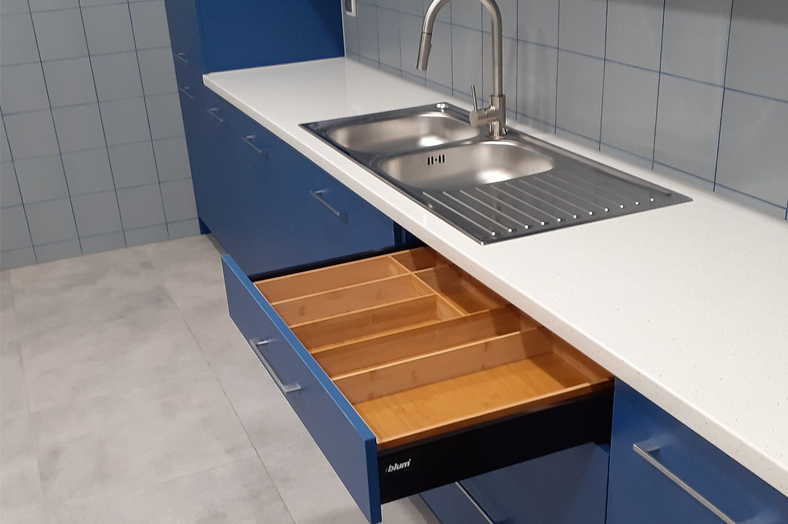
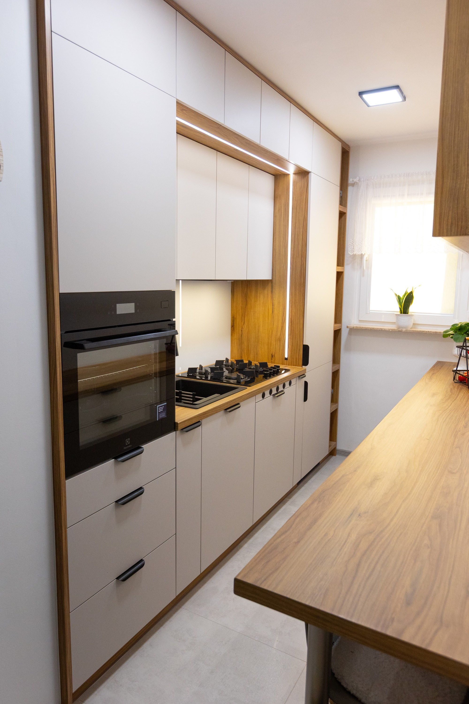

Oferta

Kuchnia ma pasować do tego, jak gotujesz. Rozrysowuję zabudowę pod Twoje sprzęty i nawyki: wysokość blatu pod Twój wzrost, szuflady tam, gdzie sięgasz najczęściej. Szafki prowadzę do sufitu, żeby nic nie kurzyło się na wierzchu. Projekt oglądasz, zanim zamówię materiał.

Szafa na wymiar bierze przestrzeń od podłogi po sufit, bez martwej szczeliny na kurz. Środek planujemy razem: drążki i szuflady pod to, co naprawdę wieszasz i składasz. Drzwi przesuwne albo otwierane - zależnie od tego, ile miejsca ma pokój.

Skos na poddaszu i wnęka pod schodami to miejsca, które zwykle się marnują. Robię zabudowy dokładnie pod te nieproste kąty: szafki schodzące w skos, szuflady pod stopniami. Z martwego rogu robi się najpojemniejsza część domu.

Szafka RTV pod tę jedną ścianę albo biurko we wnękę - robię meble do każdego pomieszczenia, w którym gotowe wymiary zawodzą. W łazience daję płyty i fronty odporne na parę i wodę, z okuciami, które nie rdzewieją. Taki zestaw przeżyje niejedno zalanie.

Korpusy trzymają się dobrze, ale fronty odchodzą, a blat ma ślady od garnków? Robię same fronty i blat pod istniejącą zabudowę, w nowym kolorze i z nowymi okuciami. Wymiary zdejmuję z Twoich szafek, więc kuchnia nie idzie do wymiany.

Zanim cokolwiek powstanie, przyjeżdżam z miarą i słucham. Sprawdzam piony ścian i przebieg rur - to, co potem najczęściej psuje gotowe projekty. Dostajesz rysunek z wymiarami i cenę. Decyzję podejmujesz na spokojnie, bo projekt do niczego nie zobowiązuje.
Prosty, przewidywalny proces - wiesz, na czym stoisz na każdym etapie.
Opowiadasz, czego potrzebujesz, a my podpowiadamy rozwiązanie, które się sprawdzi.
Dostajesz jasną cenę i termin, zanim cokolwiek ruszy.
Robimy na czas i zgodnie z ustaleniami.
Napisz, co chcesz zrobić - odpowiemy z propozycją i wyceną.